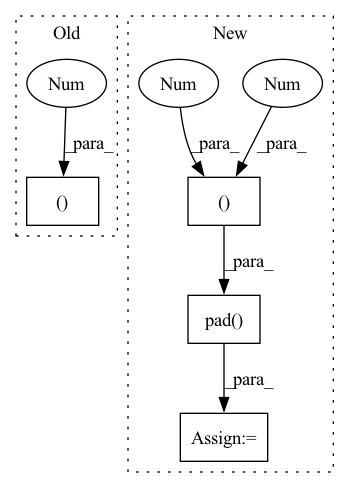

Pattern ID :2288

Before Change
batch_size = ids.shape[0]
ids = ids.long()
pad = torch.zeros((batch_size, 1), dtype = torch.long)
ids_0 = torch.cat((ids, pad), dim = -1)
ids_1 = torch.cat((pad, ids), dim = -1)
After Change
// ids are in shape (batch, seq, heads)
ids = ids.long()
ids_0 = F.pad(ids, (0, 0, 0, 1))
ids_1 = F.pad(ids, (0, 0, 1, 0))
if exists(segment_pos):
segment_pos = rearrange(segment_pos, "b n -> b n 1")
mask = (segment_pos == 0).long()
In pattern: SUPERPATTERN
Frequency: 3
Non-data size: 4
Instances
Fragment ID: 9747124
Project Name: lucidrains/n-grammer-pytorch
Commit Name: 81f3a47759f5b0f34188308e3609af6806093d9c
Time: 2021-12-03
Author: lucidrains@gmail.com
File Name: n_grammer_pytorch/n_grammer_pytorch.py
M Class Name: AnonimousClass
N Class Name: AnonimousClass
M Method Name: get_bigram_ids(3)
N Method Name: get_bigram_ids(3)
M Parent Class:
N Parent Class:
M File Name: n_grammer_pytorch/n_grammer_pytorch.py
N File Name: n_grammer_pytorch/n_grammer_pytorch.py
M Start Line: 24
M End Line: 31
N Start Line: 25
N End Line: 30
'>
Before Change
batch["label_valence"] = torch.from_numpy(labels[..., 0])
// discretize valence into categories
bins = np.linspace(-1, 1, 4, endpoint=False)
class_labels = np.digitize(labels[..., 0], bins) - 1
batch["class_valence"] = torch.from_numpy(class_labels)
batch["label_arousal"] = torch.from_numpy(labels[..., 1])
After Change
if self.split != "test":
labels = np.pad(labels, ((0, to_pad), (0, 0)), "edge")
expr_labels = np.pad(expr_labels, ((0, to_pad), (0, 0)), "edge")
expr_valid = np.pad(expr_valid, ((0, to_pad), (0, 0)), "edge")
batch = {
"vid_name": vid_name,
"start": start_frame,
'>
Fragment ID: 9747153
Project Name: sailordiary/m3f.pytorch
Commit Name: a576188eaa852121b4277b8a4553ded796eadeb9
Time: 2020-02-03
Author: me@sailorzhang.com
File Name: models/dataset.py
M Class Name: AffWild2SequenceDataset
N Class Name: AffWild2SequenceDataset
M Method Name: __getitem__(2)
N Method Name: __getitem__(2)
M Parent Class: Dataset
N Parent Class: Dataset
M File Name: models/dataset.py
N File Name: models/dataset.py
M Start Line: 213
M End Line: 243
N Start Line: 199
N End Line: 255
'>
Before Change
gamma_i = gamma if S_tmin <= sigma_i <= S_tmax else 0.
yield sigma_i, gamma_i
yield 0., 0. // last step return 0.
// preconditioned network output
// equation (7) in the paper
After Change
steps = torch.arange(num_sample_steps, device = self.device, dtype = torch.float32)
sigmas = (self.sigma_max ** inv_rho + steps / (N - 1) * (self.sigma_min ** inv_rho - self.sigma_max ** inv_rho)) ** self.rho
sigmas = F.pad(sigmas, (0, 1), value = 0.) // last step is sigma value of 0.
return sigmas
// preconditioned network output
'>
Fragment ID: 9747103
Project Name: lucidrains/denoising-diffusion-pytorch
Commit Name: 5db64fec4bc1c34dac5ecdde5d9e6ffdc7b32c97
Time: 2022-06-28
Author: lucidrains@gmail.com
File Name: denoising_diffusion_pytorch/elucidated_diffusion.py
M Class Name: ElucidatedDiffusion
N Class Name: ElucidatedDiffusion
M Method Name: sample_schedule(2)
N Method Name: sample_schedule(2)
M Parent Class: nn.Module
N Parent Class: nn.Module
M File Name: denoising_diffusion_pytorch/elucidated_diffusion.py
N File Name: denoising_diffusion_pytorch/elucidated_diffusion.py
M Start Line: 111
M End Line: 124
N Start Line: 111
N End Line: 120